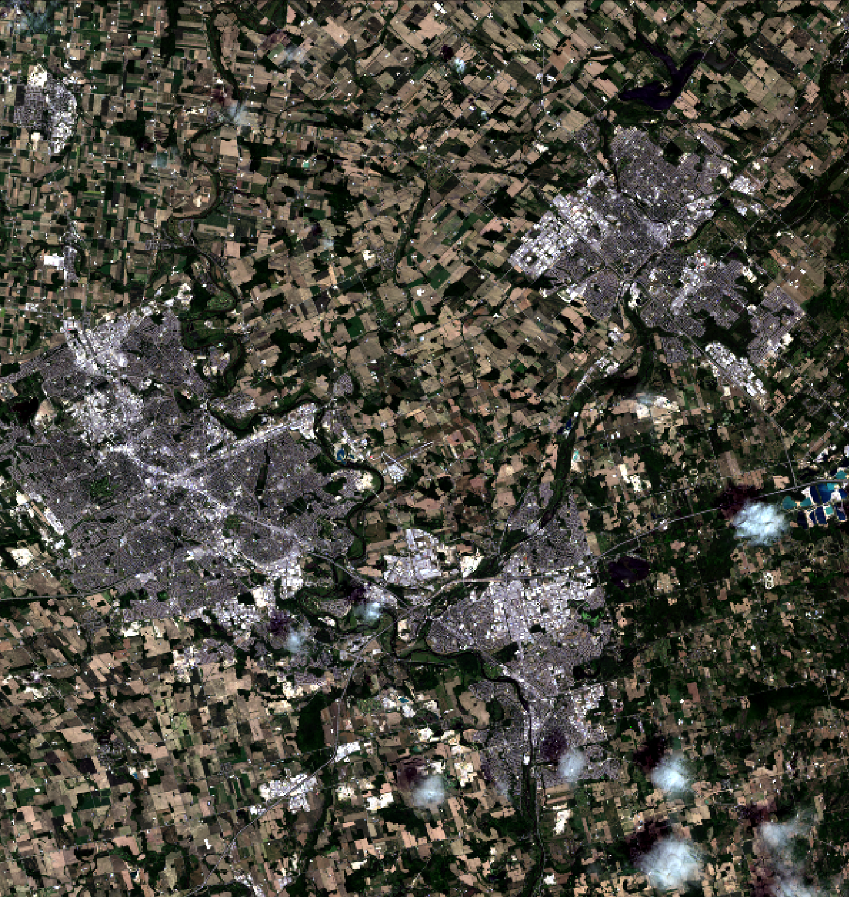

Part 1: HSI Transform
If you haven't already done so, update your version of the Whitebox Workflows Python library by typing the following line at the terminal:
pip install whitebox-workflows -U
In Lab 2, we saw how various contrast stretches can be used to improve the contrast (i.e. image lightness) and thereby improve the colour-composite derived from three stretched images. In this part of Lab 3, you will be introduced to the HSI transform (also called IHS), which can be used, along with contrast stretching, to further refine the colour balance of colour images.
Readings: Mather and Koch (2022). Chapter 5 Section 5.5 Hue, Saturation, and Intensity (HSI), pp. 162-164.
The RGB-to-HSI transform takes three bands of imagery, or a red-green-blue (RGB) colour composite, as input and produces three transformed bands: hue, saturation, and intensity (HSI). Note, HSI is sometimes referred to as ISH or even HIS; Mather and Koch refer to this transform by the HSI convention, while WhiteboxTools uses ISH. Hue is related to the dominant wavelength of light and is perceived as the color associated with a pixel in a composite image. Saturation is the purity of a color. Colours become less pure as more white light is added, making them appear somewhat pastel. Intensity refers to the brightness, or lightness, of a color. There are several versions of the RGB-to-HSI transform, but one common convention results in HSI values within the following numerical ranges:
0 < H < 2PI
0 < S < 1
0 < I < 1
Hue is actually an angular quantity, and therefore its degree range takes 0 < H < 360 (i.e., 0 - 2PI).
Be sure to download the imagery data associated with this lab assignment into an appropriate directory. These data should contain a sub-region of a Landsat 8 scene, including seven bands (i.e. bands 1 through 7) of image data, for an area of Southern Ontario between Kitchener-Waterloo, Cambridge, and Guelph. The image was acquired June 21, 2016. To get a sense of the data, use the Whitebox Workflows create_colour_composite tool to create a 432 natural-colour RGB composite image, being sure to call the image natural_colour.tif. Recall that you used a WbW script to create a colour composite image already in Lab 1. It is important that you do not enhance the composite (enhance=False), which is not the default setting. Displaying the resulting image using your data visualization software of choice, you should find that it looks as follows:

Notice how dark, faded, and washed-out the colours in the image appear. The idea behind an HSI transform is simple. We can convert the three bands of data used to create this natural-colour composite image into the HSI colour space. We then perform a linear contrast stretch on the intensity (to brighten the image) and saturation (to make the image more colourful) bands and then perform the inverse transform (HSI-to-RGB) back into RGB colour space. When we perform contrast stretching directly on the RGB components, as we did in Lab 2, there is a good chance that the image colouring will be significantly altered, producing an unnatural appearance. By stretching only the intensity and saturation bands without altering the hue data, we will not be adjusting the colour values, only their colourfulness and lightness. In this way, we can ensure that the resulting enhanced image still looks natural after the adjustment.
Let's do the adjustments and see if we can improve the colour-composite. Using VS Code, create a new Python script called hsi.py and copy the following script into the file:
hsi.py
import os
import whitebox_workflows
wbe = whitebox_workflows.WbEnvironment('floating-license-ID') # Initialize Whitebox
try:
# declare your working directory as a variable
wbe.working_directory = "/path/to/lab/data" # BE SURE TO UPDATE THIS
assert(os.path.isdir(wbe.working_directory))
# wbe.verbose = True # Uncomment this line if you want to see tool message outputs
band2, band3, band4 = wbe.read_rasters('band2_clipped.tif', 'band3_clipped.tif', 'band4_clipped.tif')
# Transform the data into intensity-hue-satuation
print("Transform the data into intensity-hue-saturation...")
(intensity, hue, saturation) = wbe.rgb_to_ihs(red=band4, green=band3, blue=band2)
# Update the image min/max values. This is required before we do the contrast stretching.
intensity.update_min_max()
saturation.update_min_max()
# Perform a contrast stretch on the intensity band
print("Stretching the intensity band...")
intensity_cs = wbe.percentage_contrast_stretch(
raster=intensity,
clip=8.0,
tail="upper",
num_tones=1024
)
# The contrast stretched image has a value range from 0-1024 but we need it from 0-1
intensity_rescaled = intensity_cs / 1024.0
# Now, perform a contrast stretch on the saturation band
print("Stretching the saturation band...")
saturation_cs = wbe.percentage_contrast_stretch(
raster=saturation,
clip=0.25,
tail="upper",
num_tones=1024
)
# The contrast stretched image has a value range from 0-1024 but we need it from 0-1
saturation_rescaled = saturation_cs / 1024.0
# Transform the IHS data back into RGB, using the stretched intensity and saturation bands,
# and create a colour composite
print("Transform the IHS data back into RGB...")
(r, g, b) = wbe.ihs_to_rgb(
intensity=intensity_rescaled,
hue=hue,
saturation=saturation_rescaled
)
natural_colour_hsi = wbe.create_colour_composite(red=r, green=g, blue=b, enhance=False)
# Output our final image
wbe.write_raster(natural_colour_hsi, "natural_colour_hsi.tif", compress=True)
print("Operation complete!") # Provide some sort of indication that the job is done.
except Exception as e:
print(f"Exception: {e}")
finally:
print(wbe.check_in_license('floating-license-ID')) # Check your license back in.
Once the script has successfully run, open the resulting natural_colour_hsi.tif image using your data visualization software of choice.
1.1. Now modify the script above so that it saves the original as well as the contrast-stretched intensity and saturation images (Hint: you'll simply need to add some
write_rasterstatements in the script). Include screenshots of each with your final report. (2 marks)1.2. Describe the impact that stretching the intensity and saturation bands had on the natural-colour composite image. Include a screenshot of the enhanced image with your final report. (3 marks)
1.3. How much did we clip the tails of the intensity and saturation bands by? What would be the impact of either raising or lowering the clip values? (2 marks)
Now experiment with adjusting each of the intensity and saturation stretch parameters (i.e. clip and tail values in the percentage_contrast_stretch function) to see if you can further refine the image quality.
Include the colour composite resulting from your best (most refined) transformation and also include the final stretch parameter values used to create the image. (2 mark)
The enhance optional parameter used in the CreateColourComposite tool performs an automated adjustment similar to the HSI-transform based stretch of the composite image. However, when we need more control over this adjustment, manually manipulating the HSI values as we have above is our best option.
1.4. Based on lectures and your readings, what is the main goal of image contrast stretching? (2 marks)